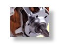

Current Projects
Past Projects
Advanced Vehicle Control Systems
Copier Paperpath Control
Disk Drive Control
Intelligent Machining
ILP Summary '96-'97
Robotics
 Robotics Overview
| Individual Projects
Robotics Overview
| Individual Projects

Motion control is a broad topic that is of importance to many areas. Key control challenges are to achieve high speed, high precision/accuracy, and maintain robust performance. To use manufacturing application as an example, increased speed allows an increased production rate, increased precision/ accuracy allows the fabrication of higher quality products, and maintaining robust performance assures consistent product quality. Good examples are items such as gears, machined parts, semiconductors, electronic packaging, and many others.
Within this industry, several key technological advances are taking place. More powerful processors are allows more advanced control algorithm to be used. Advances in actuators, such as direct drive motors, linear motors, and brushless motors are reducing traditional difficulties such as backlash, friction, and parasitic system dynamics. Advances is power semiconductors are allowing these new actuators to be driven in a more power-efficient and cost-effective fashion. Advances in bearing systems, particularly for low load situations such as fluid and magnetic bearings, are also reducing the effects of friction and stiction. Promising new materials such as composites and ceramics offer potential benefits in mechanical properties such as lowering mass, improving damping, and reduction in thermal effects. Finally, advances in sensors, due primarily to new techniques in optics, electronics, and signal processing, are allowing designers to get better feedback measurements.
Our research on this area hopes to extend and apply these advances, particularly from the control standpoint. (M. Tomizuka, ILP Summary 1996-1997)
